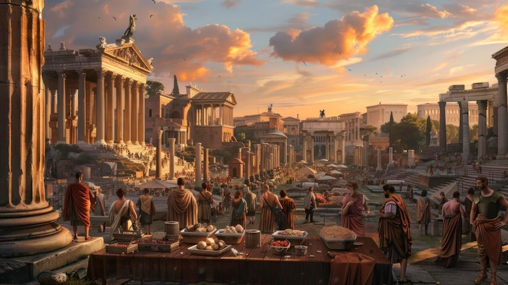
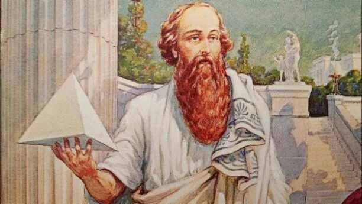
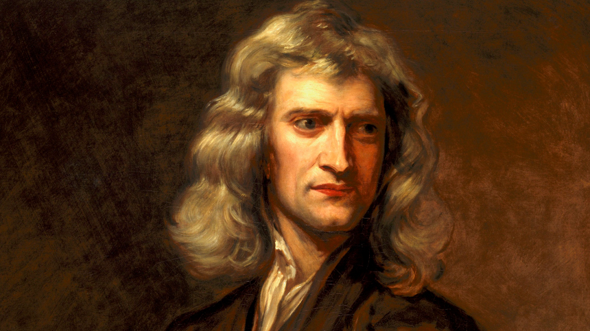
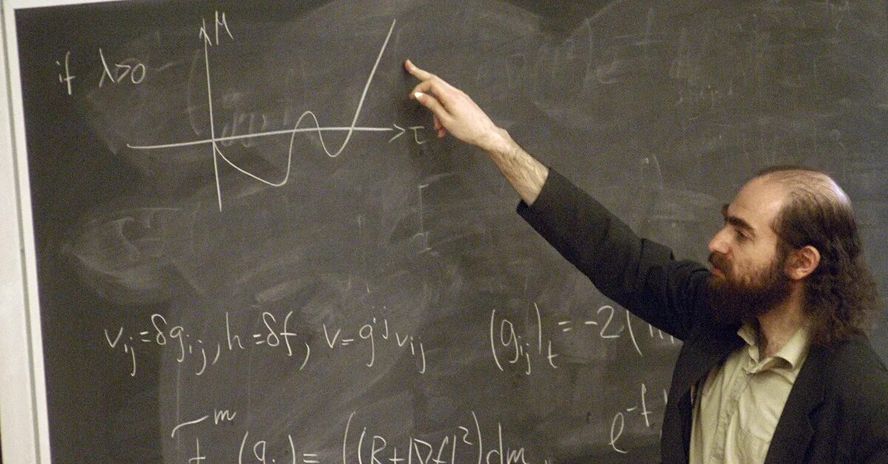

История развития математики

Древний мир
Математика в древнем мире развивалась из практических нужд общества: счёта товаров, торговли, строительства, измерения земель и наблюдений за небом. В Месопотамия создавались сложные системы счисления, таблицы умножения, деления, решались квадратные и кубические уравнения, вычислялись площади полей и объёмы хранилищ. В Древний Египет математика применялась для строительства пирамид и храмов, землемерных расчётов и ведения хозяйственных записей; использовались дроби, пропорции и приближённые вычисления. В Древняя Греция математика превратилась в теоретическую науку. Учёные, такие как Пифагор, исследовали свойства чисел и геометрические закономерности, а Евклид систематизировал геометрию. Архимед разработал методы вычисления площадей и объёмов, сделал первые приближения числа π и заложил основы интегральных идей. Именно здесь были заложены основные принципы арифметики, геометрии и алгебры, которые используются и сегодня, а также сформированы первые представления о доказательствах и системности науки.
Период элементарной математика
Период элементарной математики охватывает время от античности до XVII века и характеризуется формированием основ арифметики, геометрии и алгебры. В это время закрепились правила вычислений, методы решения линейных и квадратных уравнений, работа с дробями и отрицательными числами. Математика постепенно становилась строгой наукой: учёные начали использовать доказательства и систематизацию знаний. Франсуа Виет и Рене Декарт связали алгебру с геометрией и ввели буквенную символику. Этот период заложил фундамент для дальнейшего развития математики, подготовив переход к высшей математике и современным методам вычислений, а также системному подходу к изучению чисел и форм.
Средние века
В Средние века математика развивалась как практическая наука для торговли, астрономии, строительства и землемерия. В это время широко использовались арифметика, геометрия и алгебра, распространились позиционная десятичная система, дроби и методы решения линейных и квадратных уравнений. Важную роль сыграли труды Аль-Хорезми, где систематизированы алгебраические методы и вычислительные приёмы, а работы Леонардо Пизанский популяризировали десятичную систему счёта в Европе. Математика Средних веков закладывала основы вычислительных техник и символической записи, создавая базу для перехода к математике Нового времени и развитию более сложных методов в алгебре, геометрии и арифметике.

Современная математика
Современная математика формировалась с XVII века и развивается до наших дней. В этот период появляются новые разделы: математический анализ, теория вероятностей, линейная алгебра, топология и математическая логика. Вводятся понятия предела, производной и интеграла, что позволяет описывать движение, физические процессы и экономические модели. Основу математического анализа создали Исаак Ньютон и Готфрид Вильгельм Лейбниц, а в XIX–XX веках работы Карл Фридрих Гаусс и Давид Гильберт ввели строгие доказательства и новые теории. В современности выдающимся примером стал Григорий Перельман, который доказал гипотезу Пуанкаре, одно из важнейших открытий в топологии XX века. Современная математика широко применяется в программировании, криптографии, физике, инженерии и искусственном интеллекте, продолжая развивать как теоретические, так и прикладные направления науки.
Великие математики

Пифагор
Пифагор — древнегреческий математик и философ VI века до н. э., основатель пифагорейской школы. Он исследовал свойства чисел и геометрические закономерности, а его имя связано с теоремой о прямоугольном треугольнике, которая стала фундаментом геометрии и используется до сих пор. Пифагор считал, что все явления мира можно объяснить через числа, и развивал идею гармонии и порядка во Вселенной через числовые соотношения. Пифагорейская школа представляла собой закрытое научное сообщество с определёнными правилами и строгой дисциплиной, где изучались числа, геометрические фигуры, астрономия и музыка. Учёные школы открыли связь между длиной струн и музыкальными звуками, что положило начало музыкальной теории и изучению гармонии. Многие открытия школы приписывались самому Пифагору, хотя их делали и его ученики, что создало систематический подход к изучению чисел и фигур.

Исаак Ньютон
Исаак Ньютон — английский учёный XVII века, один из основоположников современной математики и физики. Он создал основы математического анализа, ввёл понятия предела, производной и интеграла, что позволило описывать движение, силы и физические процессы с высокой точностью. Ньютон разработал законы движения и всемирного тяготения, показав, что законы природы подчиняются строгой математической системе. Его работы объединили физику и математику, позволив использовать вычисления для прогнозирования явлений и решения сложных задач. Идеи Ньютона оказали огромное влияние на последующее развитие науки: его методы анализа и математическое моделирование стали фундаментом для физики, инженерии, астрономии и экономики. Его подход заложил основы строгих доказательств и системного применения математики к реальному миру, что продолжает влиять на науку и технологии по сей день.

Григорий Перельман
Григорий Перельман — современный российский математик, известный своим доказательством гипотезы Пуанкаре, одного из центральных вопросов топологии XX века. Его работа полностью изменила понимание структуры трёхмерных многогранников и стала важным достижением в геометрической топологии. Перельман использовал методы риччиевого потока и сложные аналитические техники, решая задачу, над которой работали десятилетиями лучшие математики мира. Он отказался от множества наград, включая Филдсовскую медаль и премию миллион долларов, подчеркнув своё стремление к чистоте науки и принципиальному подходу к доказательствам. Открытия Перельмана оказали глубокое влияние на современную математику, продвинув топологию, геометрию и математический анализ. Его работа стала примером сочетания теоретической строгости, новаторских методов и личной научной этики, служа вдохновением для новых поколений учёных.